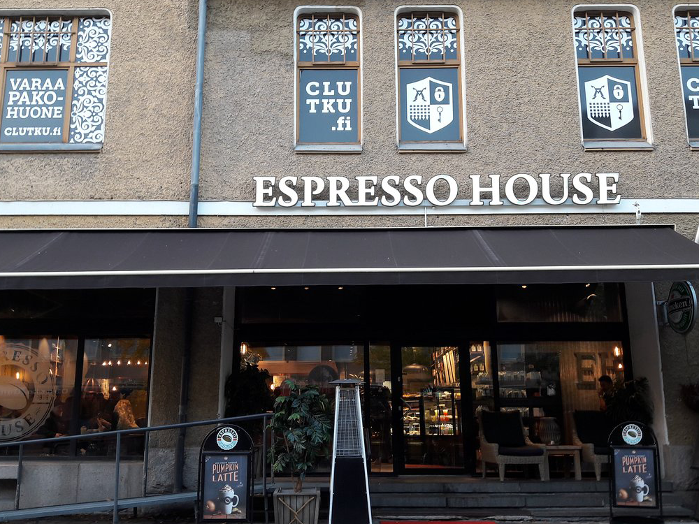

Espresso House on ruotsalainen kahvilaketju. Ketju perustettiin Lundissa vuonna 1996. Sittemmin ketju on laajentunut myös Norjaan, Tanskaan, Suomeen ja Saksaan. Espresso Housessa on valikoima erilaisia kahvijuomia, joista monien pohjana on ketjun oma espresso.
Suomen ensimmäiset Espresso Houset avattiin syyskuussa 2015 Helsingin Kampin keskukseen ja Espoon kauppakeskus Selloon. Ketjun Suomen toimitusjohtaja on Anssi Thureson.[2] Viimeisin kahvila avattiin Mikkeliin joulukuussa 2020.[3] Helmikuussa 2021 Suomessa oli 58 Espresso Housea: Espoossa kuusi, Helsingissä 23, Hyvinkäällä yksi, Jyväskylässä kaksi, Kokkolassa yksi, Kotkassa yksi, Kouvolassa yksi, Kuopiossa yksi, Lahdessa kaksi, Lempäälässä yksi, Porissa yksi, Mikkelissä yksi, Raisiossa yksi, Salossa yksi, Seinäjoella yksi, Tampereella kaksi, Turussa kolme, Vaalimaalla yksi, Vaasassa kaksi, Vantaalla kolme, Oulussa kaksi, Kempeleessä yksi ja Rovaniemellä yksi.
Löydät meidät Turun ydiskestustasta kävelykadulta lemma avoinnoa joka päivä 8.30-20.30
